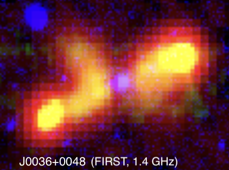

Ionization in Massive Protostellar Outflows
The mechanism behind massive star formation is still under debate and is difficult to observe because massive stars form in distance, crowded environments. However, we can study their bipolar outflows whose bright radio emissions penetrate the surrounding gas and dust.
I developed a post-processing pipeline to model shock and photo ionization and the resulting free-free radio emissions from 3D MHD simulations of massive protostellar disk-wind driven outflows.
I worked on this as an undergraduate research fellow in the Virginia Initiative on Cosmic Origins advised by Jonathan Tan, Jan Staff, and Jon Ramsey.

X-Shaped Radio Galaxies Hosting SMBHBs
X-shaped radio galaxies are a rare phenomenon in which galaxies with bright radio lobes have a second set of dimmer radio-visible wings, forming and X-shape.
One scenario to explain these wings is that they are relic emissions from a previous spin orientation, which could have been reoriented due to binary interactions between dual SMBHs.
Under the advisorship of Ilsang Yoon and Bjorn Emonts, at the National Radio Astronomy Observatory, I searched for signatures of binary SMBHBs among all known X-shaped Radio Galaxies.